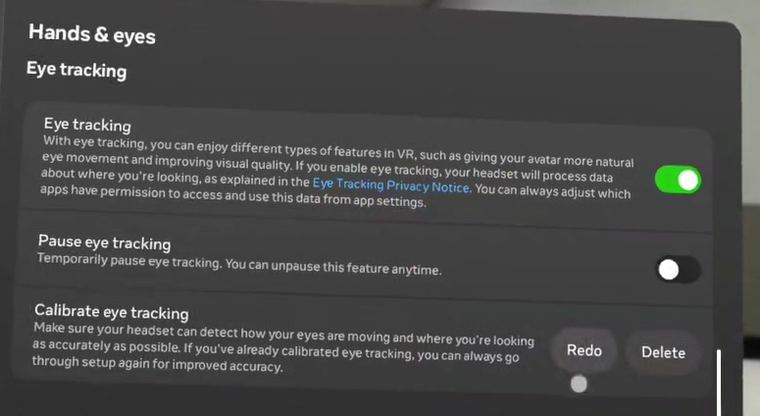
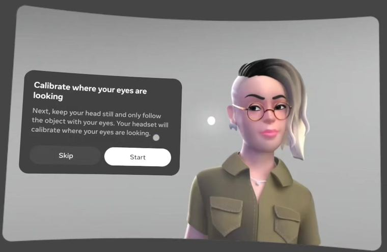
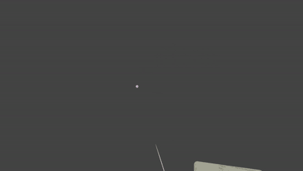
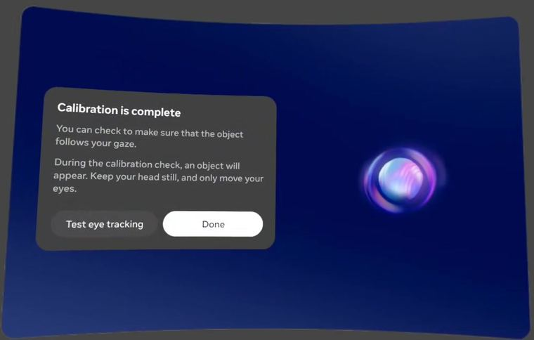
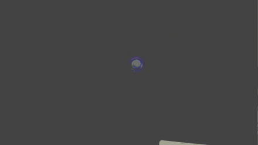
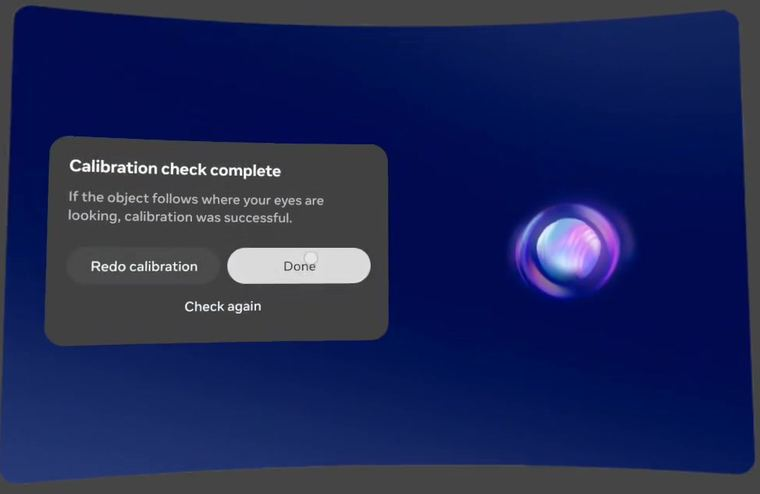

시선으로 표적을 찾아 선택합니다
헤드셋을 쓰면 검은 화면에 원반들이 나타납니다. 그중 미리 기억해 둔 줄무늬와 같은 방향의 원반을 눈으로 찾아 선택하는 것 — 과제는 이게 전부입니다. 아래 네 가지만 읽고 오시면 충분합니다.
1 · 실험 목표‘눈으로 고르는 인터페이스’가 쓸 만한지 알아봅니다
요즘 VR/AR 기기는 컨트롤러 없이 시선으로 물체를 가리키고 손가락으로 확정하는 방식을 씁니다. 편하지만 문제도 있습니다 — 아직 다 보지도 않았는데 눌러버리거나, 비슷하게 생긴 것을 잘못 고르는 일이 생깁니다.
그래서 이 연구는 사람이 비슷하게 생긴 것들 사이에서 표적을 찾아 고를 때, 얼마나 빠르고 정확한지, 그리고 고르는 방식(손가락으로 확정 / 계속 바라보기)에 따라 그 결과가 어떻게 달라지는지를 측정합니다.
여러분의 능력을 평가하는 시험이 아닙니다. 평가 대상은 인터페이스 쪽입니다. 틀리는 것도 데이터의 일부라 전혀 문제되지 않고, 기록은 이름 없이 참가자 번호로만 저장됩니다.
2 · 실험 환경헤드셋을 쓰고 앉은 채로 진행합니다
Meta Quest Pro를 쓰고 편히 앉은 자세로 합니다. 헤드셋이 눈동자와 손을 함께 인식하므로 컨트롤러는 잡지 않습니다. 시작 전에 짧은 눈 맞춤(캘리브레이션) 과정을 먼저 안내해 드립니다.
화면은 완전히 검고, 팔을 뻗으면 닿지 않을 정도의 거리에 원반들이 떠 있습니다. 고개는 자유롭게 돌리셔도 됩니다. 눈만 굴려서 찾아야 하는 과제가 아닙니다.
시작 전 — 시선 보정을 한 번 합니다
헤드셋이 내 눈이 어디를 보는지 익히는 과정입니다. 1분이면 끝나고, 이게 정확해야 뒤의 과제가 제대로 굴러갑니다. 진행자가 설정 화면까지 열어드리면 아래 순서대로 따라 하시면 됩니다.
-
1 · 다시 보정

진행자가 설정 → Hands & eyes 화면까지 열어드립니다. Calibrate eye tracking 줄의 Redo를 누르세요.
-
2 · 시작

“머리는 그대로 두고 눈으로만 물체를 따라가세요”라는 안내가 뜹니다. Start를 누르세요.
-
3 · 점 따라보기

작은 점이 화면 곳곳에 하나씩 나타납니다. 나타나는 즉시 눈으로 옮겨가 사라질 때까지 봅니다. 고개는 움직이지 마세요. 약 20초.
-
4 · 보정 완료

보정이 끝났습니다. 제대로 됐는지 확인하기 위해 Test eye tracking을 누르세요.
-
5 · 구슬 확인

빛나는 구슬이 나타납니다. 역시 고개는 고정하고 눈으로만 따라가세요. 구슬이 시선을 잘 따라오는지 보는 단계입니다. 약 10초.
-
6 · 확인 완료

구슬이 보는 곳을 잘 따라왔다면 Done. 눈에 띄게 어긋났다면 Redo calibration으로 한 번 더 하시면 됩니다.
점과 구슬을 따라갈 때 고개는 움직이지 말고 눈만 움직이세요. 안경을 쓰신다면 보정할 때도, 과제 중에도 계속 쓴 채로 진행합니다 — 중간에 벗거나 헤드셋을 고쳐 쓰면 보정이 어긋납니다.
화면에서 구분할 것은 두 종류의 원반뿐입니다
원반들이 나타나기 직전, 화면 가운데에 기준 패턴이 크게 한 번 보입니다. 그것과 같은 방향의 줄무늬가 표적입니다.
두 줄무늬의 차이는 아주 작을 수 있습니다. 또 완벽히 수직이거나 수평인 쪽이 항상 표적인 것도 아닙니다 — 기준 패턴을 기억해 두고 그것과 비교해야만 맞출 수 있게 만들어져 있습니다.
3 · 클릭 방식고르는 방법은 두 가지입니다
어느 쪽이든 먼저 표적을 바라보는 것이 공통이고, 확정하는 방법만 다릅니다. 지금 어떤 방식인지는 화면 아래에 항상 표시되고, 휴식 화면에서도 다음 블록의 방식을 미리 알려줍니다.
PINCH — 핀치
표적을 보면서 엄지와 검지의 끝을 가볍게 맞붙였다 뗍니다. 붙는 순간 선택됩니다.
손은 무릎이나 팔걸이 위, 편한 곳에 두세요. 팔을 들어 올리거나 카메라 쪽으로 뻗을 필요는 없습니다.
DWELL — 응시
손은 전혀 쓰지 않습니다. 표적을 정해진 시간 동안 계속 바라보면 저절로 선택됩니다.
시간은 블록마다 다릅니다 (약 0.4–1.2초). 짧은 블록에서는 “둘러보다 잘못 선택되는” 느낌이 들 수 있는데, 그것도 저희가 보려는 현상이니 신경 쓰지 마세요.
‘삐’ 소리가 나면 그 자리에서 즉시 고르세요
과제 중 가끔 짧은 삐 소리가 납니다. 그 순간 아직 표적을 못 찾았더라도 기다리지 말고 바로 고르세요. 찍어도 괜찮습니다 — 원래 그러라고 넣어둔 신호입니다.
뒤이어 “표적이었던 원반을 보고 핀치”라는 질문이 나올 수 있습니다. 확신이 없어도 가장 그럴듯한 원반 하나를 고르면 됩니다.
4 · 세션별 프로토콜모든 세션이 같은 흐름으로 진행됩니다
아래 네 단계가 한 묶음이고, ③–④가 11번 반복된 뒤 새 기준 패턴으로 다음 묶음이 시작됩니다. 묶음 몇 개가 모여 한 블록이 되고, 블록이 끝날 때마다 휴식 화면이 나옵니다.
가운데 흰 점을 봅니다. 잠깐 바라보고 있으면 저절로 넘어갑니다.
줄무늬 방향을 기억합니다. 시간 제한은 없습니다. 다 외웠으면 핀치하세요.
기준과 같은 방향의 줄무늬 원반으로 시선을 옮깁니다.
선택하면 곧바로 다음 표적이 다른 자리에 나타납니다. 기준 패턴은 그대로입니다.
세션은 모두 세 번, 내용이 조금씩 다릅니다
이어서 하셔도 되고 날짜를 나눠서 하셔도 됩니다. 아래는 각 세션에서 무엇을 하는지입니다.
- 맨 앞에 짧은 패턴 비교 과제 (5분, 첫 세션에만)
- 연습 뒤 본 과제
- 선택은 핀치만 사용
- 원반의 크기와 간격이 블록마다 달라집니다
- 가끔 삐 소리
- 연습 뒤 본 과제
- 핀치와 응시가 블록마다 번갈아 나옵니다
- 응시 시간도 블록마다 달라집니다
- 마지막 블록은 삐 소리가 자주 나고, 표적을 되묻는 질문이 붙습니다
- 연습 뒤 본 과제
- 선택은 핀치만 사용
- 두 줄무늬의 차이가 블록마다 커지거나 작아집니다
- 아주 어려운 블록도, 아주 쉬운 블록도 있습니다
- 가끔 삐 소리
첫 세션의 패턴 비교 과제는 이렇게 진행됩니다
그 밖에 알아두면 편한 것들
- 피드백 정답 여부는 대부분 알려주지 않습니다. 맨 앞 연습에서만 표시됩니다. 조용하다고 해서 틀린 것이 아닙니다.
- 휴식 블록 사이마다 휴식 화면이 나오고, 남은 블록 수가 함께 표시됩니다. 원하는 만큼 쉬고 준비되면 핀치하세요.
- 놓쳤을 때 10초 안에 고르지 않으면 그냥 다음으로 넘어갑니다. 한두 번 놓쳐도 전혀 문제되지 않습니다.
- 중단 어지럽거나 눈이 불편하면 언제든 말씀해 주세요. 즉시 멈출 수 있고, 이유를 설명하지 않으셔도 됩니다.
과제 중 기억할 것은 셋뿐입니다
- 기준 패턴과 같은 방향 가운데에서 본 줄무늬와 같은 방향의 원반이 표적입니다.
- 빠르게, 그리고 정확하게 둘 다 중요합니다. 한쪽만 신경 쓰지 않으셔도 됩니다.
- 모르겠어도 하나는 선택 특히 삐 소리가 났을 때와 패턴 비교 과제에서요.
궁금한 점은 시작 전에 편하게 물어봐 주세요. 시작한 뒤에도 휴식 화면에서는 얼마든지 이야기하실 수 있습니다.